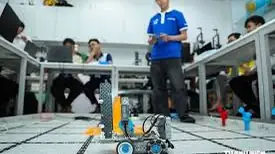
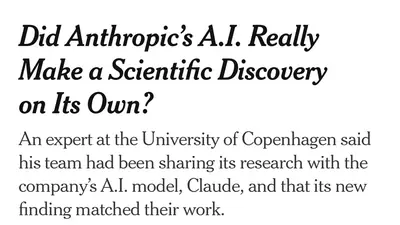
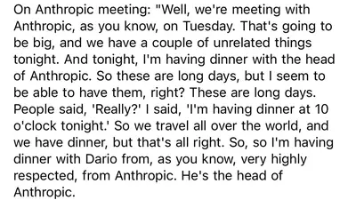

huck mason
@tylerhuckabee.bsky.social
· 09/28 09:15· 命中「OpenAI」
bad news babe a rogue openai agent must have hacked our refrigerator last night and drank 15 beers

5 100+ 次搜尋 生活2026.09.28
生活2026.09.28
 ACG2026.09.27
ACG2026.09.27
Social Lab（OpView 社群口碑資料庫）每週彙整各平台熱門事件。榜上的數據以圖表呈現， 這裡列出每週彙整的標題與觀測期間，點進去看完整排行。
 YouTube 意見領袖
YouTube 意見領袖
Social Lab 依社群聲量統計的各平台人氣意見領袖前三名。
Bluesky 的全站熱門話題，以英語圈的娛樂、體育、政治為主，僅供參考。
以 30 小時內、依讚數與轉發數排序，已過濾掉 AI 繪圖標籤與明顯洗版內容。
bad news babe a rogue openai agent must have hacked our refrigerator last night and drank 15 beers
Four days ago, a scientist was surprised by the news that Anthropic discovered new virus genes for making DNA. He says he’s been studying them for years—and feeding his data to Anthropic’s AI as part of his own research. Coincidence? Here’s my story. nyti.ms/3VSWayc
'this AI agent can do all your tasks for you' so now i gotta sit here and write a list of all my tasks for a robot to fuck up. why. why wouldn't i just keep to the current system where i fuck up my own tasks
NEW: Meet the real AI ‘rogue agent’: Lord Watson of Palantir. I am sick to the teeth of this current AI hype cycle & its perversion of language. The only thing going ‘rogue’ right now are AI boosters, a gullible & compliant press & a Labour Lord 1/ broligarchy.substack.com/p/meet-the-r...
I participated in some public library ai courses. I’m telling you that the state of literacies and the complexity of lives deeply enmeshed in the bowels of late stage capitalism cannot find a use case for an agent & if they could, people don’t have the scaffolding to imagine one that could be useful
Jet Force Gemini was one of those games I always wanted to play as a kid but didn't know how to get my hands on it. No idea what kind of game it was. Just looked cool
Executives working on AI at Microsoft and OpenAI admitted what its critics have been saying all along: LLms are predatory pieces of technology that have been built on what a Microsoft executive called “an astonishing theft of unprecedented proportions.” www.404media.co/doom-loop-op...
Fresh on the heels of similar complaints about OpenAI from mathematicians, a biologist says Anthropic’s Claude “discovered” the same system his team has spent years researching while sharing their unpublished work with Claude. It’s no longer just publishers & artists accusing AI labs of plagiarism.

In a completely unsurprising turn of events, Meta's Muse AI is stealing Apple Messages, past and present, and uploading the contents to its cloud, even if explicitly told not to.
* OPENAI SCRAPS RELEASE OF NEW AI MODEL OVER SAFETY CONCERNS: WSJ @bloomberg.com
I would like everyone to read this, from @eoinhiggins.bsky.social eoinhiggins.substack.com/p/there-are-...
Trump via pool

What this looked like in practice: People came to the class excited or at least mildly interested in learning what an ai agent could do for them. The trainers came to help people train an agent for their known specific cases. Everyone quickly realized that there wasn’t much middle ground.
an LLM cannot have understanding because that is a capability reserved exclusively to me, as I unwittingly parrot the premise of a paper I didn’t read based on some overconfident tweets I saw one time in 2023